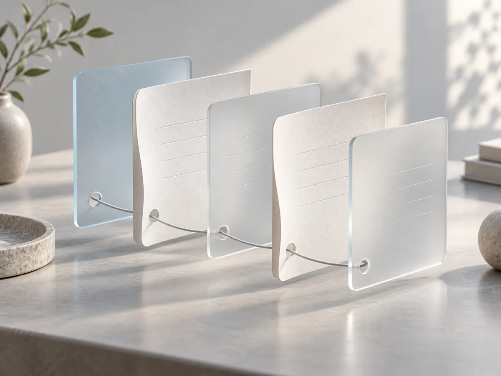
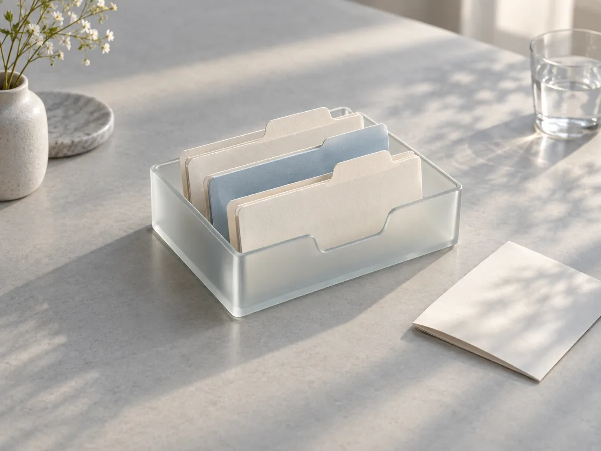

Your Mac, with a memory.
A clear timeline of your work. Kept on your Mac, with the evidence behind it.

Your day moves between apps. Keep the thread.
DeskLore connects those moments into a readable history, so you can return to what mattered.
Find that reference again.
Return to the pages and ideas you were exploring.
Come back to an idea.
Revisit the work that led to your next decision.
See where the day went.
Look back on a clear timeline of your work.
Pick up where you left off.
Revisit the pages you read and the work you were doing. Find your place and carry on.


At home on your Mac.
Your work history is stored locally by default. View it, revisit it, or delete it whenever you choose.
Read the full privacy policyYour history should stay under your control.
DeskLore runs locally and is open source under Apache-2.0. You can inspect how it captures, filters, stores, and deletes data.
View source